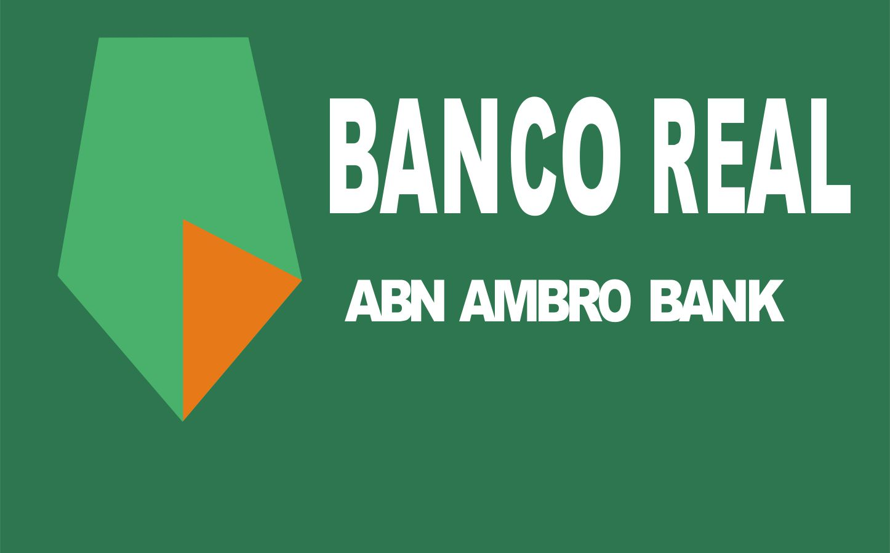
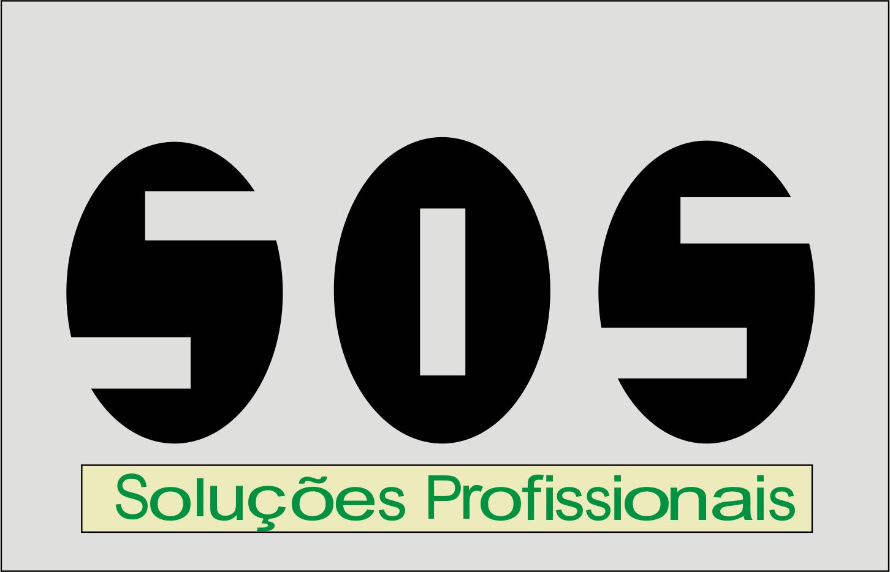
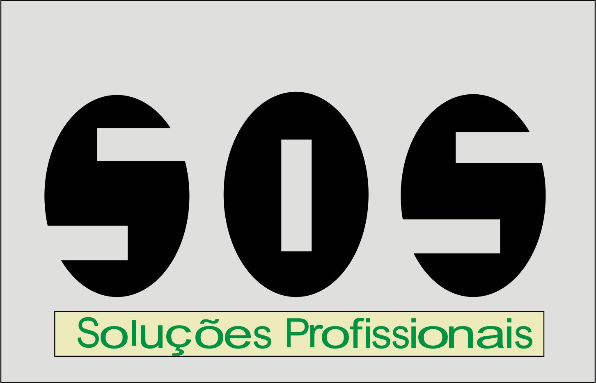

Bem vindo a Império Design
Bem vindo a Império Design
A empressa tem como função prestar os melhores serviços na área de design para todas as pessoas.
Tanto para grandes companhias, como organizações pequenas ou pessoas físicas.
Temos como objetivo construir projetos de comunicação de forma impactante, gerando valor para o negócio do cliente.
Somos uma empresa de publicidade, de arte, de sonhos, e colocamos nossas ideias em órbita para que os objetivos dos nossos clientes sigam uma trajetória de sucesso.
A seguir alguns exemplos de nossos trabalhos já desenvolvidos
 

Fatec Jales
A fatec Jales é uma unidade do Centro Paula Souza que foi instalada em setembro de 2007, com a implantação da 1ª Turma do Curso Superior de Tecnologia em Agronegócios.


Agronegócio
O que é?
Agronegócio é toda relação comercial e industrial envolvendo a cadeia produtiva agrícola ou pecuária.
No Brasil, o termo agropecuária é usado para definir o uso econômico do solo para o cultivo da terra associado com a criação de animais.
A Composição Curricular do Curso, está regulamentada na Resolução CNE/CP nº 03/2002, que institui as Diretrizes Curriculares Nacionais Gerais para a organização e o funcionamento dos cursos superiores de tecnologia.
A Carga Horária estabelecida para o Curso, na Portaria nº 10, de 28 de julho de 2006, que aprova, em extrato, o Catálogo Nacional dos Cursos Superiores de Tecnologia.
O Curso Superior de Tecnologia em Agronegócio, pelo Catálogo Nacional de Cursos Superiores de Tecnologia, pertence ao Eixo Tecnológico Recursos Naturais e propõe uma carga horária total de 2.400 horas. A carga horária de 2.880 horas/aula corresponde a um total de 2.400 horas de atividades, mais 240 horas de Estágio Curricular, mais 160h de Trabalho de Graduação, num total de 2.800 horas, contemplando assim o disposto na legislação.
Objetivos do curso
Formar profissionais com competências tanto em tecnologias de gestão, quanto de produtos e processos, visando o entendimento das principais questões relacionadas ao Agronegócio brasileiro e produzindo, como conseqüência, direta ou indireta, intervenção na multiplicidade de variáveis dos segmentos agroindustriais públicos ou privados. Além disso, por meio de permanente atualização e investigação tecnológica, pretende-se construir conhecimentos relevantes para a sociedade e igualmente contribuir com a discussão das políticas públicas e privadas relativas ao setor.
Mais informações sobre os cursos
Gestão Empresarial
Perfil Profissional
O Tecnólogo em Gestão Empresarial (Processos Gerenciais) elabora e implementa planos de negócios, utilizando métodos e técnicas de gestão na formação e organização empresarial especificamente nos processos de comercialização, suprimento, armazenamento, movimentação de materiais e no gerenciamento de recursos financeiros e humanos. A habilidade para lidar com pessoas, capacidade de comunicação, trabalho em equipe, liderança, negociação, busca de informações, tomada de decisão em contextos econômicos, políticos, culturais e sociais distintos, são requisitos importantes a esse profissional.
Objetivos Específicos do Curso
A organização curricular de todas as atividades do curso visa desenvolver com os estudantes conhecimentos, habilidades e atitudes que contribuam para o desenvolvimento social e econômico regional e do país, por meio do empreendedorismo, capitaneado por profissionais capacitados, e com isso minimizar a mortalidade de empresas, principalmente as PMEs, permitindo o sucesso empresarial das mesmas e de seus tutores e idealizadores dos projetos.
Mais informações sobre os cursos
Sistemas para Internet
O que faz?
Esse profissional faz projetos e administra redes de computadores, instala e configura equipamentos e softwares, monta microcomputadores, configura servidores web e constrói banco de dados para a internet. Lida com ferramentas digitais usadas na criação e na administração de websites. Monta sites para a internet ou intranet e faz sua manutenção. Soluciona problemas de tecnologia web, além da implantação de sistemas de comércio eletrônico, atuando na definição de estratégias de negócios virtuais. Também administra redes em geral.
A Composição Curricular do Curso está regulamentada na Resolução CNE/CP nº 03/2002, que institui as Diretrizes Curriculares Nacionais Gerais para a organização e o funcionamento dos cursos superiores de tecnologia.
A Carga Horária estabelecida para o curso, na Portaria nº 10, de 28 de julho de 2006, que aprova, em extrato, o Catálogo Nacional dos Cursos Superiores de Tecnologia.
Objetivos do curso
Disciplinas específicas da área, como introdução à tecnologia web e redes de computadores, familiarizam os alunos com temas diretamente relacionados à internet. Essas matérias se mesclam com outras, de cunho mais geral, como matemática e empreendedorismo. As aulas práticas incluem criação de páginas para web e linguagens de programação.
Mais informações sobre os cursos
Análise e desenvolvimento de sistemas
Informações do Curso
Forma profissionais que analisam, projetam, implementam e coordenam infraestruturas de Tecnologia da Informação e Comunicação- TIC, atendendo a necessidade de mudanças provocadas pelas inovações tecnológicas nas empresas. O curso possui ênfase em engenharia de software, atuando em metodologias de construção de projetos, qualidade de software, integridade e segurança da informação, inteligência artificial, administração de banco de dados, hardware, rede de computadores, gestão de projetos de TI, consultoria tecnológica, desenvolvimento de sistemas, entre outros.
Áreas de Atuação
O profissional de Análise e Desenvolvimento de Sistemas de Informação pode atuar em empresas de assessoria e consultoria tecnológica e de desenvolvimento de sistemas, assim como nos diversos setores da economia: indústria, comércio, prestação de serviços, instituições financeiras, órgãos públicos ou como empreendedor em informática.
Sobre

Meu nome é Guilherme Ballista da Silva
Tenho 21 anos de idade, completarei 22 no dia 13 de Dezembro. No momento não trabalho ná área do meu curso, mas ja trabalhei em empresa de Design.
Sou o criador da empresa Império Design, originalmente criada somente como trabalho da faculdade do curso de Sistemas para Internet.
Estou no primeiro semestre do curso, onde desenvolvemos o site e outros projetos que poderão ser encontrados no mesmo. Futuramente pretendo trabalhar ná área de design e programação, também pretendo utilizar esse site e melhoralo ao longo do curso.
Minhas redes sociais